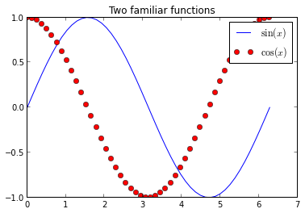

Notebook example
Rendered by vIPer using Reveal.js!
(also you can get a pdf version with chrome!)
NOTE: This notebook was modified from a Fernando's one
Since the notebook was introduced with IPython 0.12, it has proved to be very popular, and we are seeing great adoption of the tool and the underlying file format in research and education. One persistent question we've had since the beginning (even prior to its official release) was whether it would be possible to easily write blog posts using the notebook.
The combination of easy editing in markdown with the notebook's ability to contain code, figures and results, makes it an ideal platform for quick authoring of technical documents, so being able to post to a blog is a natural request.
Today, in answering a query about this from a colleague, I decided to try again the status of our conversion pipeline, and I'm happy to report that with a bit of elbow-grease, at least on Blogger things work pretty well!
This post was entirely written as a notebook, and in fact I have now created a github repo, which means that you can see it directly rendered in IPyhton's nbviewer app.
Converting your notebook to html with nbconvert
The first thing you will need is our nbconvert tool that converts notebooks across formats. The README file in the repo contains the requirements for nbconvert (basically python-markdown, pandoc, docutils from SVN and pygments).
Once you have nbconvert installed, you can convert your notebook to Blogger-friendly html with:
nbconvert -f blogger-html your_notebook.ipynb
This will leave two files in your computer, one named your_notebook.html and one named your_noteboook_header.html; it might also create a directory called your_notebook_files if needed for ancillary files. The first file will contain the body of your post and can be pasted wholesale into the Blogger editing area. The second file contains the CSS and Javascript material needed for the notebook to display correctly, you should only need to use this once to configure your blogger setup (see next):
# Only one notebook so far
(master)longs[blog]> ls
120907-Blogging with the IPython Notebook.ipynb fig/ old/
# Now run the conversion:
(master)longs[blog]> nbconvert.py -f blogger-html 120907-Blogging\ with\ the\ IPython\ Notebook.ipynb
# This creates the header and html body files
(master)longs[blog]> ls
120907-Blogging with the IPython Notebook_header.html fig/
120907-Blogging with the IPython Notebook.html old/
120907-Blogging with the IPython Notebook.ipynb
Configuring your Blogger blog to accept notebooks
The notebook uses a lot of custom CSS for formatting input and output, as well as Javascript from MathJax to display mathematical notation. You will need all this CSS and the Javascript calls in your blog's configuration for your notebook-based posts to display correctly:
- Once authenticated, go to your blog's overview page by clicking on its title.
- Click on templates (left column) and customize using the Advanced options.
- Scroll down the middle column until you see an "Add CSS" option.
- Copy entire the contents of the
_headerfile into the CSS box.
That's it, and you shouldn't need to do anything else as long as the CSS we use in the notebooks doesn't drastically change. This customization of your blog needs to be done only once.
While you are at it, I recommend you change the width of your blog so that cells have enough space for clean display; in experimenting I found out that the default template was too narrow to properly display code cells, producing a lot of text wrapping that impaired readability. I ended up using a layout with a single column for all blog contents, putting the blog archive at the bottom. Otherwise, if I kept the right sidebar, code cells got too squished in the post area.
I also had problems using some of the fancier templates available from 'Dynamic Views', in that I could never get inline math to render. But sticking to those from the Simple or 'Picture Window' categories worked fine and they still allow for a lot of customization.
Note: if you change blog templates, Blogger does destroy your custom CSS, so you may need to repeat the above steps in that case.
Adding the actual posts
Now, whenever you want to write a new post as a notebook, simply convert the .ipynb file to blogger-html and copy its entire contents to the clipboard. Then go to the 'raw html' view of the post, remove anything Blogger may have put there by default, and paste. You should also click on the 'options' tab (right hand side) and select both Show HTML literally and Use <br> tag, else your paragraph breaks will look all wrong.
That's it!
What can you put in?
I will now add a few bits of code, plots, math, etc, to show which kinds of content can be put in and work out of the box. These are mostly bits copied from our example notebooks so the actual content doesn't matter, I'm just illustrating the kind of content that works.
In[7]: # Let's initialize pylab so we can plot later
%pylab inline
Welcome to pylab, a matplotlib-based Python environment [backend: module://IPython.zmq.pylab.backend_inline].
For more information, type 'help(pylab)'.
With pylab loaded, the usual matplotlib operations work
In[8]: x = linspace(0, 2*pi)
plot(x, sin(x), label=r'$\sin(x)$')
plot(x, cos(x), 'ro', label=r'$\cos(x)$')
title(r'Two familiar functions')
legend()

The notebook, thanks to MathJax, has great LaTeX support, so that you can type inline math $(1,\gamma,\ldots, \infty)$ as well as displayed equations:
$$ e^{i \pi}+1=0 $$
(the last equation is beatiful, isn't it?... Damián talking... he he!)
You can easily include formatted text and code with markdown
You can italicize, boldface
- build
- lists
and embed code meant for illustration instead of execution in Python:
def f(x):
"""a docstring"""
return x**2
or other languages:
if (i=0; i<n; i++) {
printf("hello %d\n", i);
x += 4;
}
And you also have highlight for your code, hehe! (Damián talking again...)
And since the notebook can store displayed images in the file itself, you can show images which will be embedded in your post:

IPython rocks!
Just my little contribution...
I have a lot of work to do but this is an exciting beginning!
You can check vIPer.
And you can find me at: